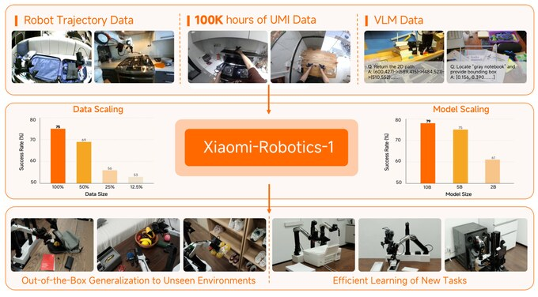
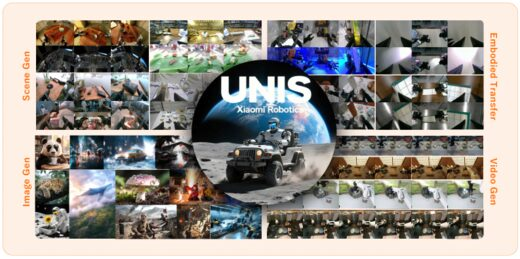
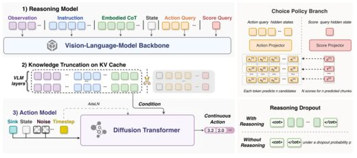
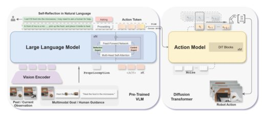
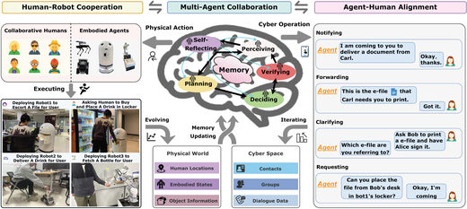
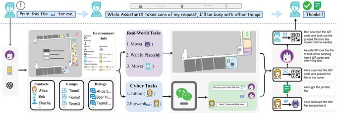
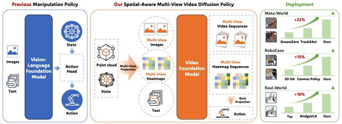

Xiaomi-Robotics-1: Scaling Vision-Language-Action Models with over 100K Hours of Real-World Trajectories
Xiaomi Robotics Team · Core contributor to pre-training and post-training
Technical Report, 2026
I am currently a Master's student in the Department of Computer Science and Technology at Tsinghua University, advised by Prof. Huaping Liu.
My research interests lie in embodied intelligence, especially vision-language-action models, predictive world models, embodied reasoning, and human-robot collaboration. I am also part of the Embodied Foundation Model Team at Xiaomi Robotics.
I received my earlier engineering degrees from Beijing Institute of Technology, and I am interested in building robot systems that can generalize beyond controlled demonstrations.

Xiaomi Robotics Team · Core contributor to pre-training and post-training
Technical Report, 2026

Xiaomi Robotics Team
Technical Report, 2026
Research in robot learning, embodied reasoning, and human-robot collaboration. My name is highlighted in the author lists.

Nan Sun, Yuan Zhang, Yongkun Yang, Wentao Zhao, et al.
NeurIPS 2026 (Spotlight)

Nan Sun, Yongchang Li, Chenxu Wang, Huiying Li, Huaping Liu
ICRA 2026

Nan Sun, Bo Mao, Yongchang Li, Chenxu Wang, Di Guo, Huaping Liu
IEEE Transactions on Robotics (T-RO), Special Issue on Foundation Models (Conditionally Accepted)

Nan Sun, Bo Mao, Yongchang Li, Di Guo, Huaping Liu
IROS 2025 (Oral)

Peiyan Li, Yixiang Chen, Yuan Xu, et al., Nan Sun, et al.
NeurIPS 2026